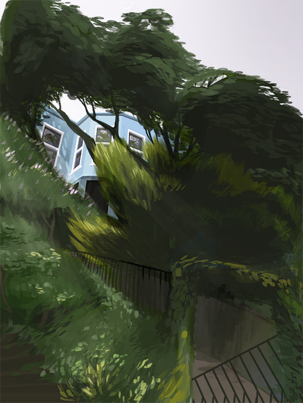

<a href="#img2"></a>
<a href="#img3"></a>
<a href="#img4"></a>
<a href="#img5"></a>
<a href="#img6"></a>
<a href="#img7"></a>
<a href="#img8"></a>
<a href="#img9"></a>
<a href="#img10"></a>
<a href="#img11"></a>
<a href="#img12"></a>
<a href="#img13"></a>
<a href="#img14"></a>
<a href="#img15"></a>
<a href="#img16"><span class="slideshow-img" id="img15">
	<span id="flashContent">
	</span>
</span></a>
 
<!-- build:js scripts/vendor.js -->
<!-- bower:js -->
<script src="../bower_components/jquery/dist/jquery.js"></script>
<!-- endbower -->
<!-- endbuild -->

<!-- build:js scripts/page17.js -->
<script type="text/javascript" src="scripts/swfobject.js"></script>
<!-- endbuild -->

<script type="text/javascript">
  <!-- Adobe recommends that developers use SWFObject2 for Flash Player detection. -->
  <!-- For more information see the SWFObject page at Google code (http://code.google.com/p/swfobject/). -->
  <!-- Information is also available on the Adobe Developer Connection Under "Detecting Flash Player versions and embedding SWF files with SWFObject 2" -->
  <!-- Set to minimum required Flash Player version or 0 for no version detection -->
  var swfVersionStr = "11.8.0";
  <!-- xiSwfUrlStr can be used to define an express installer SWF. -->
  var xiSwfUrlStr = "";
  var flashvars = {};
  var params = {};
  params.quality = "best";
  params.bgcolor = "#ffffff";
  params.play = "true";
  params.loop = "true";
  params.wmode = "direct";
  params.scale = "showall";
  params.menu = "true";
  params.devicefont = "false";
  params.salign = "";
  params.allowscriptaccess = "sameDomain";
  var attributes = {};
  attributes.id = "Margaux_storysetup";
  attributes.name = "Margaux_storysetup";
  attributes.align = "middle";
  swfobject.embedSWF(
    "flash.swf", "flashContent",
    "800", "600",
    swfVersionStr, xiSwfUrlStr,
    flashvars, params, attributes, function (options) {
      if (!options.success) {
        $('#flashContent').append('');
      }
    });
</script>